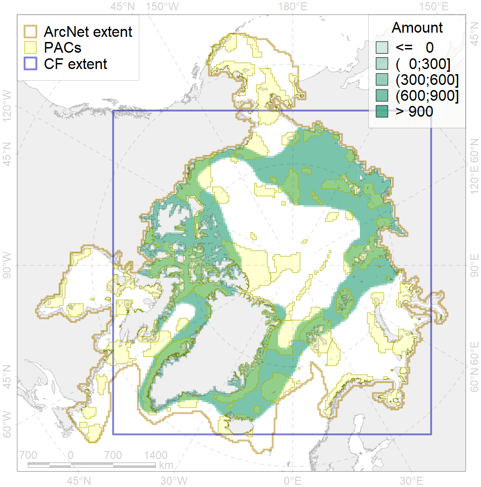
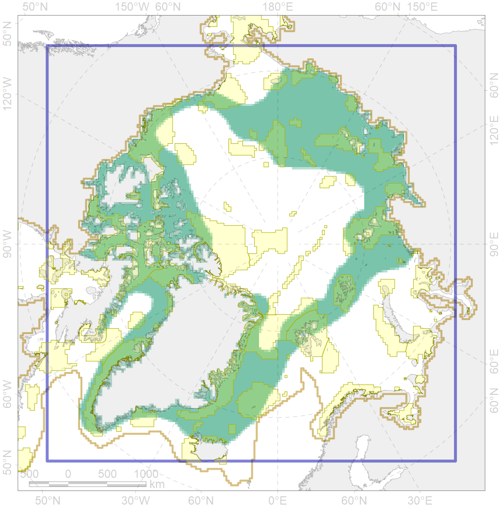

4037

| CF code | 4037 |
| CF name | Distribution of the Glacial cod (Arctogadus glacialis) |
| Time Period | 1930s-2010s |
| Source(s) | Chernova, 2011; Coad Reist, 2018; Mecklenburg et al., 2018 |
| Seasonality | Jan-Dec |
| Depth Horizon | Usually to 250 m, rare to 950 – 1440 m, and pelagicaly above larger depth |
| Methodology | Field studies of multiple expeditions, from published results |
| Use Restrictions | Open sources |
| Author Name | N. Chernova |
| Notes | Chernova (2011) compiled the data of: Svetovidov, 1948; Andriyashev, 1954; Andriyashev et al., 1980; Svetovidov, 1986; Süfke et al., 1998; Mecklenburg et al., 2002; Jordan et al., 2003; Jørgensen et al., 2005; Aschan et al., 2009; ; |
| Scenario’s Target | 0.09 |
| Target Achievement | 0.373 (Scenario: 414.5%) |
| PAC | Share of the Total Amount within the PAC | Share of the Target Achievement for the ArcNet | PAC’s Contribution to the Target Achievement |
|---|---|---|---|
| 7 | 0.3% | 3.4% | 0.8% |
| 8 | 0.6%0.6% | 5.3%5.3% | 1.3%1.3% |
| 9 | 0.1%0.1% | 0.8%0.8% | 0.2%0.2% |
| 10 | 0.3%0.3% | 2.8%2.8% | 0.7%0.7% |
| 11 | 1.5%1.5% | 15.7%15.7% | 3.8%3.8% |
| 12 | 1.3%1.3% | 12.9%12.9% | 3.1%3.1% |
| 13 | 0.5%0.5% | 5.4%5.4% | 1.3%1.3% |
| 14 | 2.7%2.8% | 25.4%25.9% | 6.1%6.2% |
| 15 | 0.1%0.1% | 0.7%0.8% | 0.2%0.2% |
| 22 | 1.3% | 14.3% | 3.5% |
| 28 | 0.0%0.0% | 0.1%0.1% | 0.0%0.0% |
| 29 | 2.1%2.5% | 22.8%26.3% | 5.5%6.4% |
| 30 | 1.6%1.9% | 17.8%20.2% | 4.3%4.9% |
| 32 | 3.0%3.2% | 30.0%32.4% | 7.2%7.8% |
| 33 | 0.3%0.4% | 3.4%4.2% | 0.8%1.0% |
| 34 | 2.3%2.3% | 23.1%23.2% | 5.6%5.6% |
| 35 | 0.0% | 0.2% | 0.1% |
| 36 | 0.2%0.2% | 1.5%1.6% | 0.4%0.4% |
| 37 | 0.1%0.2% | 0.7%0.8% | 0.2%0.2% |
| 38 | 0.0%0.0% | 0.1%0.1% | 0.0%0.0% |
| 40 | 0.0%0.0% | 0.2%0.3% | 0.1%0.1% |
| 41 | 0.1%0.2% | 0.9%1.1% | 0.2%0.3% |
| 42 | 0.4%0.4% | 3.2%3.2% | 0.8%0.8% |
| 44 | 2.9%3.3% | 29.7%32.9% | 7.2%7.9% |
| 45 | 0.2%0.4% | 2.4%3.7% | 0.6%0.9% |
| 46 | 0.1%0.1% | 0.6%0.6% | 0.2%0.2% |
| 47 | 0.1% | 1.3% | 0.3% |
| 48 | 0.1%0.1% | 0.5%0.5% | 0.1%0.1% |
| 49 | 0.2%0.2% | 2.0%2.0% | 0.5%0.5% |
| 50 | 0.0% | 0.4% | 0.1% |
| 51 | 1.3%1.5% | 14.5%16.3% | 3.5%3.9% |
| 52 | 2.9%3.1% | 31.2%32.4% | 7.5%7.8% |
| 53 | 0.0%0.0% | 0.1%0.1% | 0.0%0.0% |
| 54 | 1.1%1.1% | 12.2%12.6% | 2.9%3.0% |
| 56 | 0.2%0.3% | 1.4%1.6% | 0.3%0.4% |
| 57 | 2.1%2.2% | 19.7%19.9% | 4.8%4.8% |
| 59 | 0.0%0.0% | 0.2%0.2% | 0.1%0.1% |
| 60 | 0.9%0.9% | 8.4%8.5% | 2.0%2.1% |
| 61 | 0.0% | 0.2% | 0.0% |
| 62 | 2.5%2.6% | 26.1%26.3% | 6.3%6.4% |
| 63 | 0.3%0.4% | 2.8%2.8% | 0.7%0.7% |
| 64 | 0.1%0.1% | 0.7%0.8% | 0.2%0.2% |
| 65 | 2.0%2.0% | 18.6%19.1% | 4.5%4.6% |
| 83 | 0.0%0.0% | 0.1%0.1% | 0.0%0.0% |
| inner | 36.1%38.6% | 363.9%383.9% | 87.8%92.6% |
| outer | 63.9%67.3% | 50.6%80.9% | 12.2%19.5% |
| † supplement values are for area consistence whereas principal values are for Accenter compatible gridded stats |